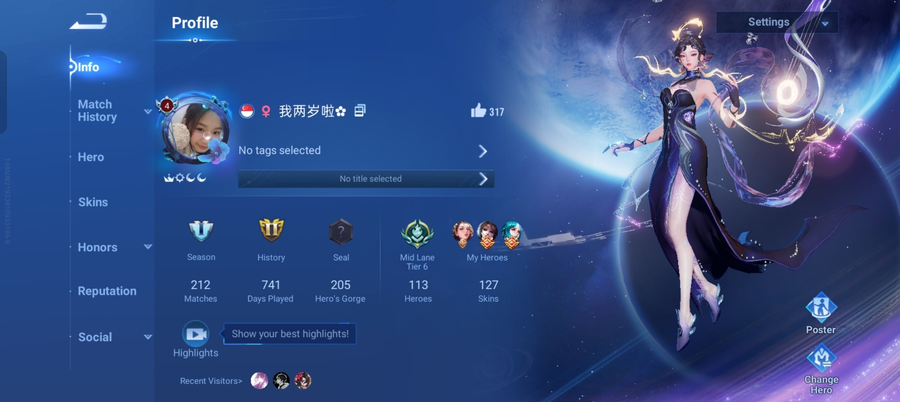

I’ve been playing Honor of Kings since Primary 5, and it’s been one of my favourite ways to relax and connect with friends. Every 5v5 match feels different, pushing me to think fast, make smart decisions, and work closely with my teammates.
Over time, it has helped me improve my teamwork, communication, and decision-making skills while keeping the fun alive. I also enjoy the creative hero skins because they make each character feel unique and add more excitement to the game.
